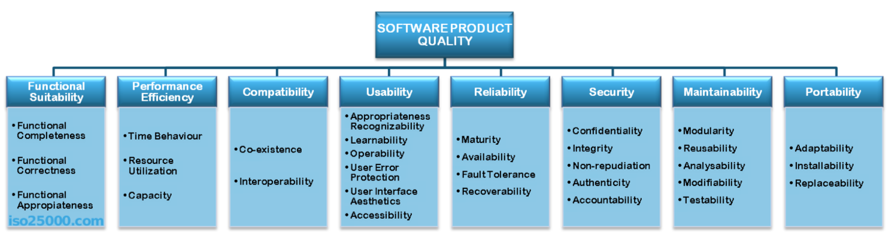

Big Data System Design: Kwaliteit en testen
Roelant Ossewaarde / HU
Dag 7, 1 maart 2019
1 Introductie - kwaliteitsattributen

2 Big data aspecten:
Verschillende aspecten van het systeem om mee rekening te houden:
- De kwaliteit van de data
- De kwaliteit van de analyses
- De kwaliteit van de systemen om data & analyses op te slaan.
Big Data Testing Aspects:
- Validation of structured and unstructured data
- Performing non-functional testing
- Optimal test environment
- Dealing with non-relational databases.
3 Kwaliteit in verschillende fases van data
Als je werkt met een datalake dan wordt data in zo min mogelijk bewerkte vorm opgeslagen (brondata). Data wordt pas gestructureerd als een toepassing er ook echt gebruik van maakt.
Bring computation to the data.
Typische tests:
- Data type validatie
- Range en constraint validatie
- Code en cross-reference validatie.
- Complexere validaties, zoals conditionele validaties.
Wat is relevant voor de OSF data?
3.1 HDFS
Traditioneel: storage is een aparte component in het systeem, gescheiden van compute; tegenwoordig wordt storage vaak geïmplementeerd als bijvoorbeeld Netword Attached Storage (NAS) of Storage Area Networks (SAN). Dataverwerking volgt in zulke systemen steeds dezelfde stappen: haal input data uit store; plaats data in geheugen; verwerk data; schrijf data weg.
Bij groei van storage moet ook compute groeien; en dus ook de verbinding tussen die twee. Probleem is dat de kosten van verbindingen niet-lineair stijgen: 10 x zo veel bandbreedte is meer dan 10 x zo duur. Bovendien zijn eisen aan opslag tegewoordig anders dan de eisen waarmee traditionele filesystems zijn geb
De oplossing die Google bedacht: het Google File System (GFS). Het motto is om storage en compute niet meer te scheiden, zoals in de Von Neumann architectuur: ``breng compute naar data, niet andersom''. Hadoop Distributed File System is een open source implementatie van GFS.
3.1.1 Andere architectuur, ander filesysteem
Zo'n modernere architectuur stelt ook andere eisen aan de organisatie van de opslag. Design principes van traditionele filesystemen vs. GFS:
| traditioneel | GFS | |
|---|---|---|
| component failures zijn | excepties | de norm |
| geoptimaliseerd voor | files < 100 Mb | files > 100 Mb |
| datamutatie en lezen vooral | random | sequential |
| # clients | minder | veel |
| belangrijk qua snelheid | latency | bandbreedte |
3.1.2 Bewerkingen via HDFS

3.1.3 Verschillende nodes met verschillende rollen
- NameNode (backup node)
- DataNode
- Checkpoint Node
3.2 Validatie van proces-output
In een typisch Hadoop/Spark/MapReduce proces wordt de bewerking bij de data uitgevoerd. Als het filesysteem over x machines is verspreid, dan worden dus op elk van die x machines ook bewerkingen van de data gedaan.
Het framework (MapReduce / Spark) regelt en coordineert de processen over de verschillende deelsystemen.
Daarvoor moeten bewerkingen wel parallel gemaakt kunnen worden. Zie de primer voor tooling die je kunt gebruiken voor Unit Testing.
4 Kwaliteit van analyses
Typische benadering data-analyse: neem een subset van de data en ontwikkel een model dat geldig is voor de gehele data-set. Hoe meer data, hoe specifieker het model.
Over het algemeen geldt: hoe meer data, hoe beter het model. Maar te veel data is ook niet goed: wat je vindt moet een juiste afspiegeling zijn van wat je zoekt (Bonferroni's principe) om te voorkomen dat je onzin-patronen vindt.
Meer informatie per data-punt lijdt tot exponentiele groei van de data die we nodig hebben: de Curse of dimensionality.
4.1 Bonferroni's principle
Zelfs in compleet random datasets zullen bepaalde patronen ontstaan. Die lijken interessant, maar zijn slechts statistische ruis.
Voorbeeld: massa-surveillance om weinig voorkomende patronen te herkennen.
Voorbeeld: gezichtsherkenning van terroristen.
4.2 Hypotheses
Bijna altijd in data mining problemen geldt dat we iets willen leren van een grote groep door een kleine groep te bestuderen. Een typisch klassificatie-probleem is bijvoorbeeld het bepalen of iets wel, of niet, aan bepaalde voorwaarden voldoet.
Een belangrijke vraag is: hoe goed voorspelt een hypothese toekomstige voorbeelden? M.a.w., hoe goed generaliseert de hypothese?
Als we een hypothese leren op basis van een deel van de data, dan maken we altijd aannames. Als een hypothese te simpel wordt gesteld, dan is er sprake van underfitting. Als de hypothese te complex wordt gesteld, dan is er sprake van overfitting.
4.3 Oplossingen
Om generalisaties te testen, wordt data vaak verdeeld in drie groepen: training data (om hypotheses op te stellen), validation data (om de generalisatie van de gekozen hypothese te testen) en test data (waar het allemaal om draait).
Door dat verschillende keren te herhalen met elke keer een andere verdeling (cross-validatie) krijg je een idee van de under- en over-fitting (links en rechts hieronder) van een dataset.